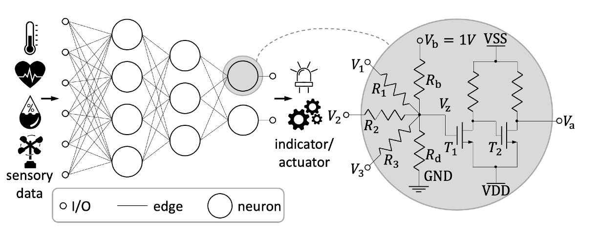
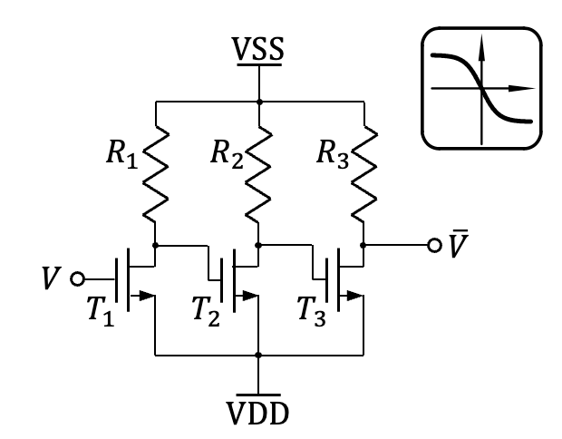
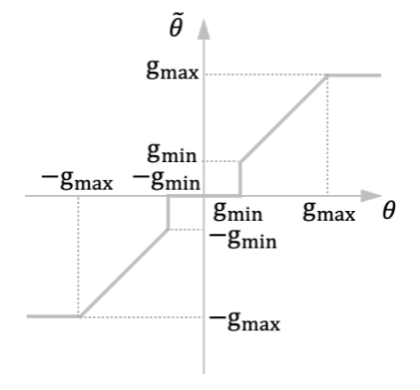
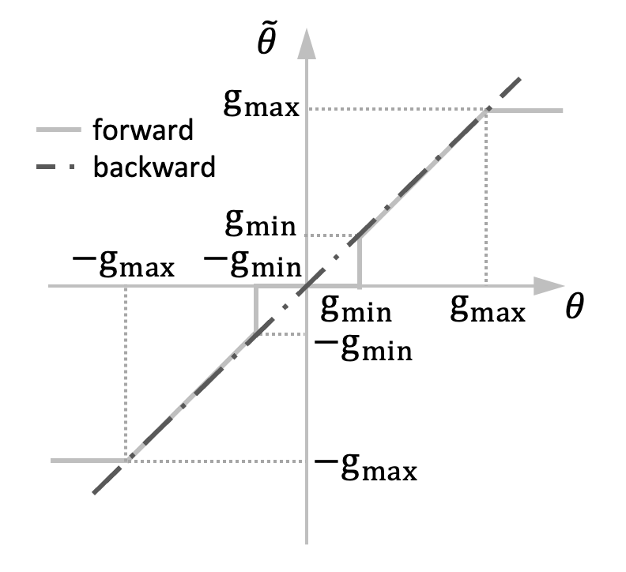

Figure 1: Schematic of an analog neuromorphic circuit.
Neuromorphic circuits are specialized electronic circuits aiming to
emulate computational paradigms in artificial neural networks
(ANNs), primarily multilayer perceptrons (MLPs). ANNs are not only
capable of solving highly-complicated problems, but also composed of
only streamlined elemental operations, namely, weighted-sums and
nonlinear activations. Since these operations can be easily
implemented through simple circuits, neuromorphic circuits have
garnered significant interest within the EDA community.
Difficulties in modeling the neuromorphic circuit?
Although neuromorphic circuits are designed to emulate ANNs, due to
physical constraints, not all ANNs can be perfectly mapped into a
corresponding neuromorphic circuit.
1. Constraint of the "weights"
Although neuromorphic circuits are designed to emulate ANNs, due to
physical constraints, not all ANNs can be perfectly mapped into a
corresponding neuromorphic circuit. Because the weights are embodied
by the resistances through
$$ w_i = \frac{g_i}{\sum_j g_j},$$
where \( g_i \) is defined by \( 1/R_i \), named conductance.
Therefore, it is evident that the weights, as well as the sum of the
weights inside a neuron, are necessarily less than one. If the
weights in an ANN doesn't meet this constraint, it can not be mapped
into a physical circuit. Also, as the weights are represented by the
ratio of the conductances, they are coupled with each other, meaning
that it is difficult to change every single weight value. Therefore,
instead of training ANN and converting it into a neuromorphic
circuit, we rather directly take the conductances as learnable
parameters.

Figure 2: Schematic of an inverter-based negation circuit.
2. Lack of negative resistance
As the weights are emulated by the conductances, they can only be
positive values, which impact the expressiveness of the computing
system. Therefore, to express negative relations, we proposed an
inverter-based negation circuit, which can invert the input signal
to a negative one, so that the negative relationship can be
converted to an alternative expression:
Note that, as shown in Figure 2, the transfer characteristic of the
negation circuit is not linear. Therefore, the \({\rm neg}(\cdot)\)
function need to be considered into the training process, instead of
simply prepend a negation circuit when negative weight is required.
To facilitate the design of negation circuit, we use a surrogate
conductance \( \theta \) as learnable parameter, which encodes the
real conductance by its absolute value \( g=|\theta| \) and the
existence of negation circuit through its sign \( \theta = {\rm
sign} (\theta) \).
3. Limited Manufacturability
Due to technical limitations, the manufacturable conductance values
are limited in a certain range, denoted by \( [g_{\rm min},g_{\rm
max}]\cup \{0\} \). Therefore, in the forward pass, we project the
surrogate conductance through a piece-wise linear function to the
manufacturable conductance space.

Figure 3: Projecting surrogate conductance to manufacturable
range.
Modeling of the Neuromorphic Circuit
After obtaining the mathematical description of the neuromorphic
circuit, we can model and optimize the learnable parameters (i.e.,
conductances) through different approaches. The most straightforward
way is to employ ML-based approach, as the neuromorphic circuit was
targeting to mimic ANNs. Beside, evolutionary algorithms can also be
employed to optimize the circuit.
1. Machine Learning Approach
Through formulating the computing graph from the original learnable
parameter \( \theta \) to the manufacturable conductance \(
\tilde{\theta} \), and thus formulating the corresponding weights \(
w \), the output of the forward pass of the computing graph
simulates the output of the neuromorphic circuit. By designing the
loss function, learnable parameters can be optimized through
back-propagation. However, as this is a gradient-based training
process, it is critical to keep every computing operation in the
computing graph is differentiable. Therefore, additional measures to
the non-differentiable operation, e.g., the projection of \( \theta
\) to \( \tilde{\theta} \), must be taken. A promising method is to
provide another function that can heuristically provide informative
gradient information and thus enables training through gradient
descent.

Figure 4: Heuristic gradient that propates back from \(
\tilde{\theta} \) to \( \theta \).
2. Evolutionary Approach
Compared to the gradient approach, evolutionary algorithms allows
more flexible optimization problems. For example, the
non-differentiable projection of surrogate condutance can be
directly involved into the evolutionary algorithm withtout any
additional measures. Also, the evolutionary algorithm can even
optimize the circuit topology (neural architecture search) along
with the training of conductances. However, the evolutionary
algorithm is more computationally expensive, and requires many
task-specific designs to achieve desired training objective.
Figure 5: Evolutionary algorithm that allows training both
parameters and neural architecture.
Figure 5 illustrates an evolutionary algorithm. By encoding the
neurons and connections into the genomes, both parameters and neural
architecture can be optimized through speciation, crossover, and
mutation.
Related Materials
(submitted) H. Zhaoet al. Neural Evolutionary
Architecture Search for Compact Printed Analog Neuromorphic
Circuit. In Proceedings of Design Automation Conference (DAC),
ACM, 2024.